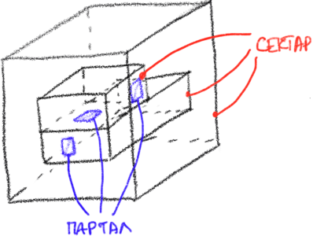
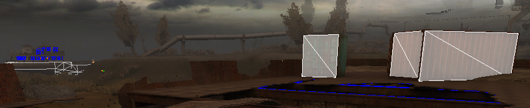
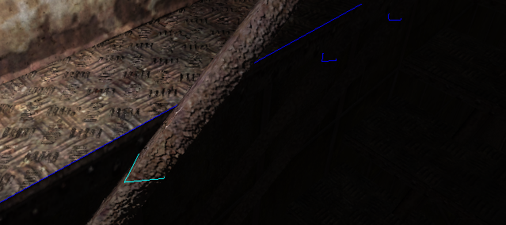
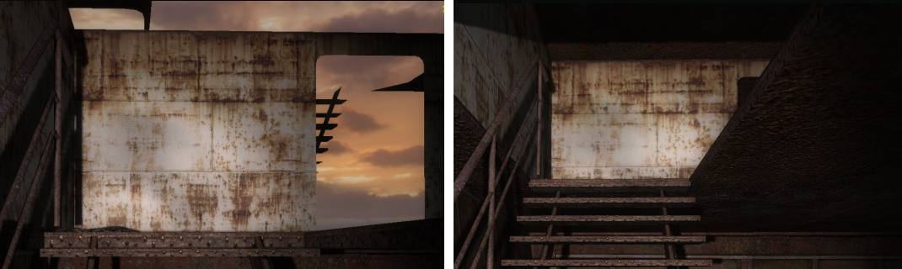
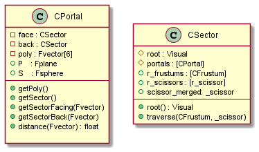
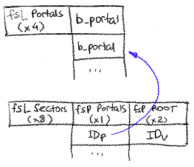

С.Т.А.Л.К.Е.Р.: Сектары і парталы
Тэорыя
Калі пачнеце знаёміцца з тым як будуецца лакацыя ў гульне, то дакладна сутыкнёцеся з сектарамі і парталамі. Тэорыя дастаткова сталая і ёсць меркванне што дужа архаічная. Партальныя рэндэры (менавіта так гэта называецца) добра працуюць у закрытых прасторах – пакоях і калідорах, але калі рабіць на іх опэнворлд, то пачынаюцца праблемы. Іх мы маем таксама.
У агульным выпадку, не мае сэнсу маляваць усю геаметрыю адразу: трэба максімальна дакладна вызначыць тыя аб’екты якія трапяць у кадр. Калі мы зможам классіфікаваць мешы па группам і вырашыць якая з іх зараз бачна, а якая не, то добра паскорым адмалёўку і зэканомім бэндвіз. Канешне дакладнасць залежыць ад памеру групы і ў ідэальным выпадку трэба працаваць на узроўні асабістай вяршыні. На практыцы мы не маем такой раскошы, таму часам у групе трапляецца геаметрыя якая можна патэнцыйна і не дадасці нічога да фінальный выявы. Такія алгарытмы маюць назву PVS (патэнцыйна бачныя мноствы) і нашы сектары-парталы як раз і ўяўляюць адзін з іх.
Азначэнні
Сектар – гэта бокс з усялякай геаметрыяй і парталамі. Узровень канструіруецца з сектараў як з кубікаў лега, але можа цалкам уяўляць сабою адзін сектар.
Партал – гэта “акно” у сектар. Можа быць любым палігонам.

Лепш уявіць сабе, што сектар – гэта пакой, а парталы – дзверы і акенца. Праз парталы бачны іншыя сектары і гэты кейс трэба асобна апрацаваць пад час адмалёўкі.
Рэчаіснасць
Узроўні сталкера пабудаваны так, што ўвесь “аўтдор” – гэта адзіны вялікі сектар, а кантэйнеры, будынкі, пакоі – гэта сектары паменш. Вось і атрымоўваецца, што стаіш ты такі на ўздымку, глядзіш удалячынь, а фпс паўзе ўніз. Напрыклад, так выглядае прастора на першай лакацыі:

Зямля, дрэвы, доўгая труба і кран – ўсё ў адным “аўтдор” сектары. Між іншым, большая частка часу адмалёўкі марнуецца на гэтым.
Таксама існуюць пацешныя кейсы: калі статычны меш праходзіць праз партал, ствараецца асобны партал па контуру гэтага меша. Цалкам гэта норм, але дзякуючы адной недакладнасці ў кодзе траверса гэта дае цікавыя артэфакты:


Тэхнічныя падрабязнасці
Фармат дадзеных

Пра партал усё зразумела: два сектары (уперадзе ды й ззаду), палігон, абмяжоўваючая сфера і плоскасць. /Не правяраў, але здаецца, што нармаль плоскасці супадае з напрамкам парталу – да “face” сектара./
З сектарам крыху складаней. Тут лепш па-асобку:
root– звычайна іерархічны візуал, стартавы меш. Менавіта з яго пачынаецца абыход статычнай геаметрыіportals– спіс парталаў сектараr_frustums– спіс фрустумаў. Зразумела будзе ў разделе пра траверс, але чаму спіс пазначу зараз: існуе імавернасць трапіць з гэтага сектара ў яго самога назад (геаметрычна я сябе гэта не ўяўляю), таму ў сектары будзе існаваць некалькі фрустумаўr_scissors– спіс нажніцаў. Выкарыстоўваюцца для адсячэння крыніц святла. Таксама можа быць некалькі (глядзі ніжэй)scissors_merged– аб’яднаны квад нажніц зr_scissors. Мёртвы код, не выкарыстоўваецца.
Загрузка
І сектары і парталы жывуць у асноўным level файле. Чанкі выглядаюць проста:

IDv– індэксroot-геаметрыі сектара (загружана раней)IDp– індэксы парталаў з чанка парталаўb_portal– структура серыялізаванага партала
|
|
Вызначэнне сектара
Адбываецца у CRender::Calculate
|
|
Кожны фрэйм глядзім як змянілася пазіцыя камеры, каб пачаць турбавацца ці не трапілі мы ў наступны сектар. Калі так, то трэба вызначыць новы сектар і паведаміць пра гэта іншым падсістэмам. /Апошнім, на самой справе, скарыстаецца толькі код аднаўлення мінімапы у сеткавай гульне./
Эпсілан можна зрабіць і менш, так як пакуль стаіш на месцы камера рухаецца ўверх-ніз на велічыню дастатковую, каб трыгернуць пералік сектара (але сектар так і застаецца тым жа).
Што датычыцца detectSector, то тут мы робім два рэйкаста:
-
сярод парталаў
1 2 3 4 5 6 7Sectors_xrc.ray_query(PortalsModel, P, dir, 500.0f); if (Sectors_xrc.r_count()) { CDB::RESULT* RP1 = Sectors_xrc.r_begin(); id1 = RP1->id; range1 = RP1->range; } -
сярод статычнай геаметрыі
1 2 3 4 5 6 7Sectors_xrc.ray_query(ObjectSpace.GetStaticModel(), P, dir, 500.0f); if (Sectors_xrc.r_count()) { CDB::RESULT* RP2 = Sectors_xrc.r_begin(); id2 = RP2->id; range2 = RP2->range; }
Хто бліжэй да камеры, з таго нумар сектара і бярэцца.
Траверс сектараў
Цяпер, калі мы маем сектар, то лёгка можам атрымаць усю яго статычную геаметрыю рэкурсійна
|
|
Для гэтага існуе асобны аб’ект PortalTraverser. Мы пачынаем са стартавага сектара, фрустума, пазіцыі камеры ў свеце, агульнай VP трансфармацыі і флагаў: HOM - правяраць таксама праз HOM, SSA - адбрасваць маленькія парталы і FADE - будаваць ліст “зацямнённых” парталаў.
Калі прайсціся па крокам, то алгарытм выглядае проста:
- Захоўваем бягучы сектар. Ён нам патрэбны 100%. Таксама дадаем у яго фрустум і нажніцы (у
r_frustumsіr_scissorsадпаведна) - Абыходзім усе парталы гэтага сектара. Для кожнага партала:
- Вызначаем суседні сектар (той, які па-за парталам) і глядзім:
- Ці не выходзіць ён у гэтый жа сектар?
- Ці не выходзіць ён у сектар з якога мы пачалі абход?
- Вяртаемся да партала і правяраем ці пападае ён у фрустум. Тут робіцца чэк сферы партала
S - SSA: Ці дастатковая ў партала плошча? Параўноўваецца з
r__ssaDISCARD- FADE: Калі дастатковая, але менш за
r__ssaLOD_A, то лічым гэты партал згасаючым - Калі нават менш за
r__ssaLOD_B, то гэта дужа мала. Адкідваем
- FADE: Калі дастатковая, але менш за
- Адсякаем палігон партала па фрустуму. Калі нічога не засталося – выходзім
- SCISSOR: Будуем бокс нажніц па палігону партала у праекцыйнай прасторы
- HOM: Калі яго глыбіня дужа маленькая, на усялякі выпадак правяраем HOM для палігона. Не трапіў – выходзім
- Валідацыя бокса
- HOM: зноўку HOM, але для бокса нажніц
- HOM: Чэкаем палігон праз HOM
- Вызначаем суседні сектар (той, які па-за парталам) і глядзім:
- Будуем новы фрустум з улікам парталу і пераходзім да наступнага сектара
Калі абыход скончаны, для ўсіх трапіўшых нам сектарам “склеіваем” боксы нажніц. Падрабязнасцей пра нажніцы не будзе, так як усё роўна гэты код больш не выкарыстоўваецца. Задумка была адсякаць крыніцы святла праз scissors test відэакарты.
Збор геаметрыі
Скончваюцца гэтыя дажынкі зборам усёй статычнай геаметрыі, якая знаходзіцца ва ўсіх сектарах і трапляе ва ўсе іх фрустумы.
|
|
Але пра гэта ўжо потым.